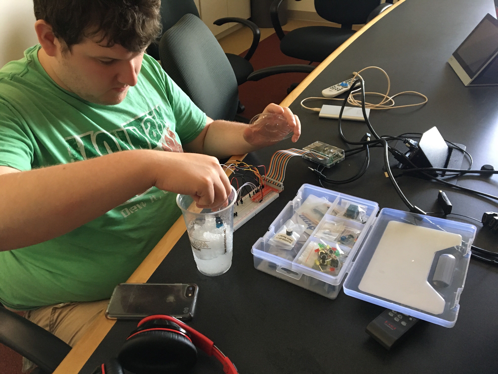

The objective of our project is to “auralize” and “musicalize” IoT data in an effort to help the visually impaired “visualize” the data. We have created sounds based on data collected from sensors in a particular environment that essentially auralizes that environment and its characteristics. This technology could be used by anyone for entertainment or utility purposes although it is mainly directed towards the visually impaired. In the case that a visually impaired person cannot easily navigate and respond to their environment, our product could potentially help them. This is not necessarily a new idea since things like this have existed for ages (e.g. crosswalk alarms), but the way in which we have designed and implemented it certainly is.
For the project, our system uses an MQTT broker for data transfer between the client’s interface and sensors connected to a Raspberry Pi. The user can control the web application’s audio by toggling the sounds produced by different sensors on and off. This allows the user to hear only the sounds that can best help them.
Above you can see a diagram of our system. The light, motion, temperature, and humidity sensors are connected to a Raspberry Pi which is connected to the IoT service in IBM Cloud. The web application is subscribed to the topics for these values on the IBM Cloud and receives them at a regular interval.
Above is the wiring diagram for the sensors to our Raspberry Pi. Wiring the individual sensors was relatively simple even though the overall diagram looks a bit cluttered due to all of the sensors being present. It should be noted that due to limitations of fritzing the sensor brands aren't the same as the real thing by have the same input and output. To clarify, the motion sensor is a MPU6050 and the humidity/temperature sensor is a DHT 11.
Below are some pictures of us working on the project.
Above you can see us testing the temperature sensor on the DHT11 sensor by dunking it into a cup of ice.
Above you can see us creating our device in IBM Cloud and generating our API key.
Above you can see us writing the code for our web application.
For further details, see our GitHub page at https://github.ncsu.edu/stparham/csc453-final-project-wolfpack-j. You can find all of our code, our demo steps, and our final report there. The repository should be accessible by anyone on NCSU's Enterprise GitHub.